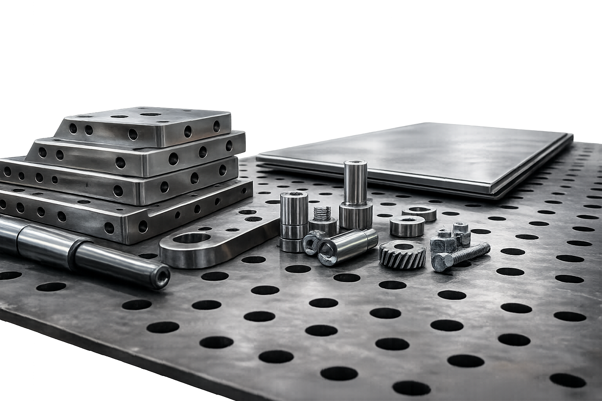
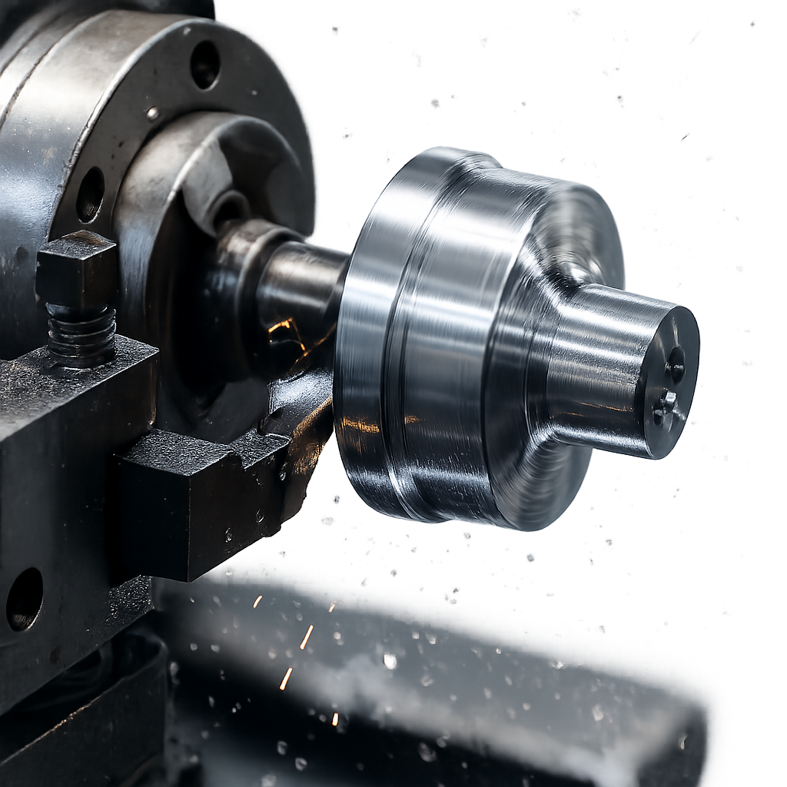
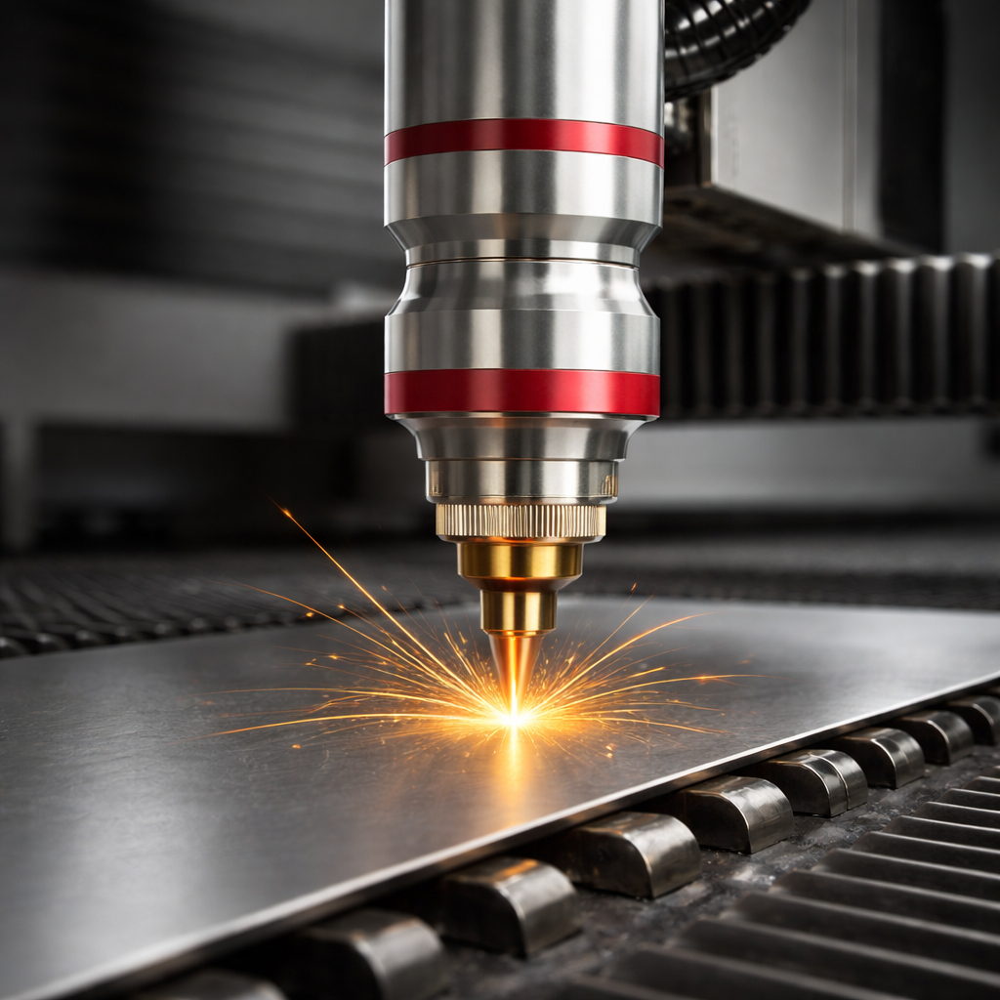
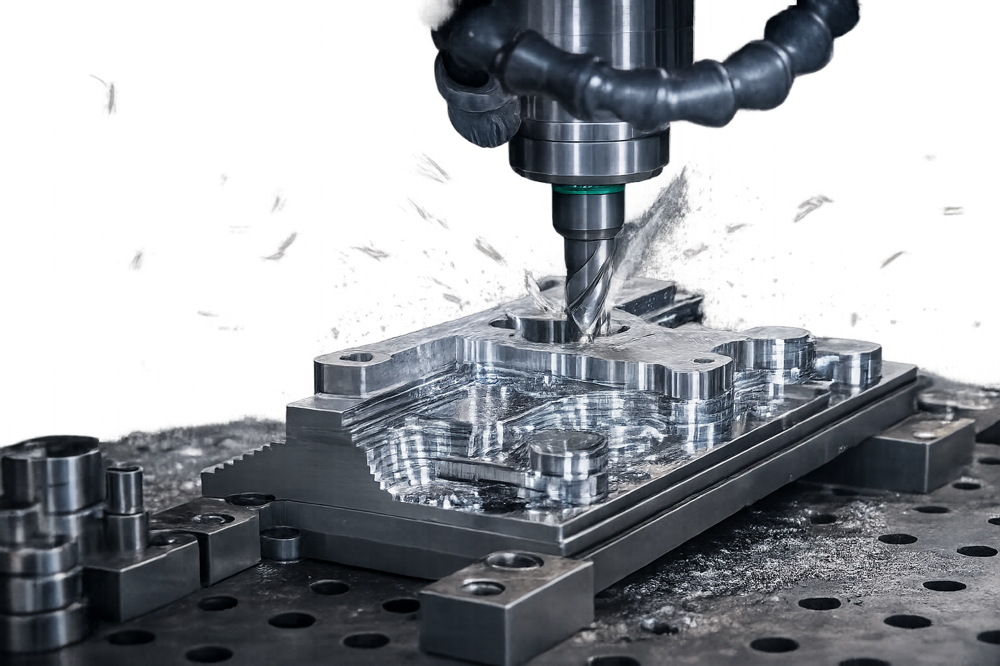
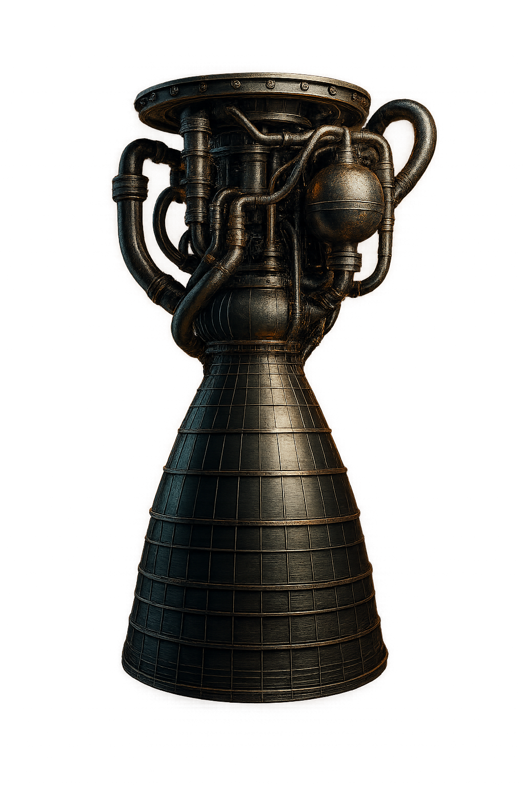

Capacidades
Procesos integrados para resolver proyectos metalmecánicos con precisión, calidad y cumplimiento: desde el diseño y modelado 3D hasta fabricación, corte y mecanizado.
Manufactura Industrial
Fabricación metalmecánica a medida orientada a aplicaciones industriales. En COBYBSA desarrollamos componentes, ensambles y soluciones completas integrando distintos procesos bajo un mismo control técnico, garantizando funcionalidad, durabilidad y cumplimiento en proyectos industriales.
Ver capacidad de Manufactura Industrial →
Ingeniería de Precisión
Ingeniería de precisión industrial enfocada en control dimensional, tolerancias estrictas y repetibilidad. Fabricamos piezas donde la exactitud es crítica, reduciendo fallos, reprocesos y problemas de ensamblaje en aplicaciones industriales exigentes.
Ver Ingeniería de Precisión →
Corte Láser Industrial
Servicio de corte láser industrial en Costa Rica para acero al carbono, acero inoxidable y aluminio. Realizamos cortes limpios, precisos y repetibles, ideales para geometrías complejas y piezas listas para procesos posteriores o ensamblaje.
Ver Corte Láser Industrial →
Corte CNC Industrial
Corte y mecanizado CNC industrial para piezas técnicas, cavidades, perforaciones y geometrías complejas. Esta capacidad permite alcanzar niveles de precisión y acabado requeridos en componentes industriales funcionales.
Ver Corte CNC Industrial →
Diseño y Modelado 3D Industrial
Diseño técnico y modelado 3D industrial para el desarrollo de piezas, estructuras y equipos a medida. Acompañamos al cliente desde la idea inicial hasta la fabricación, optimizando geometrías y reduciendo errores antes de producción.
Ver Diseño y Modelado 3D →